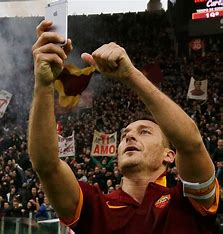

Er Pupone
Francesco Totti (Roma, 27 settembre 1976) è un ex calciatore italiano, di ruolo attaccante o centrocampista.Considerato uno dei migliori giocatori italiani di tutti i tempi. ha sempre militato nella Roma, squadra della quale è stato capitano dal 1998[8] al 2017, per un totale record di 19 stagioni, vincendo uno scudetto (2000-2001, il terzo della storia giallorossa)

Totti ha vinto il mondiale del2006 con la nazionale italiano contro quella francese (godo), segnando in semifinale contro l'olanda un bellissimo gol
Mo je faccio er cucchiaio.jpg)